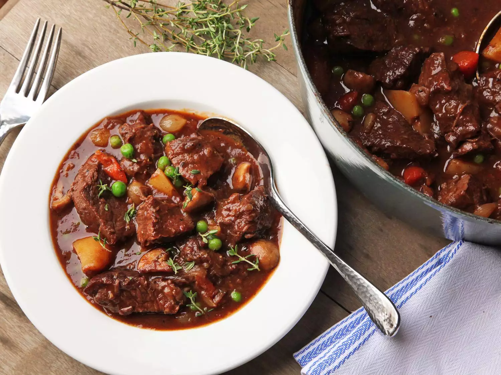
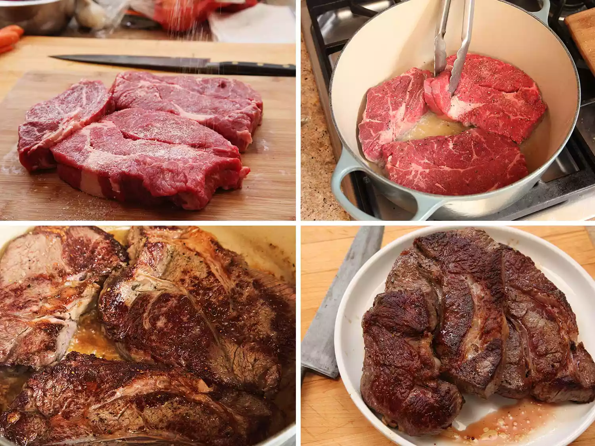
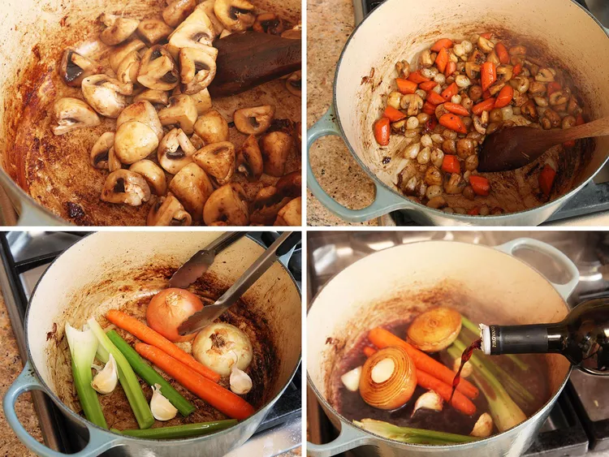
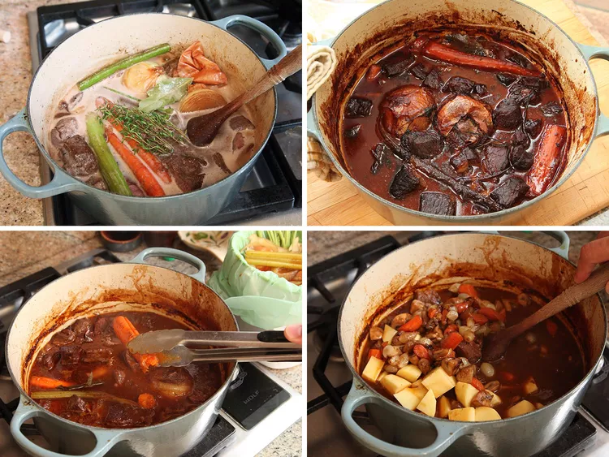
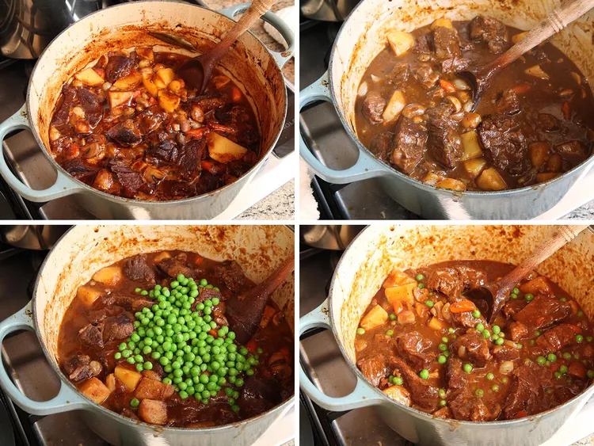

All-American
Beef Stew
from J. Kenji López-Alt of Serious Eats

About this recipe...
This is a beef stew is one of my favorite recipes from J. Kenji López-Alt, author of the spectacular book The Food Lab: Better Home Cooking Through Science. Through rigorous testing, Kenji has derived the perfect combination of ingredients to elevate this humble dish to near perfection. It includes so-called umami-bombs, such as Worcestershire sauce, soy sauce, and anchovies to enhance the flavors of perfectly cooked beef chuck roast. Make this stew and you'll be embarkin on a culinary journey that promises to delight your taste buds and bring comfort to your table with every savory spoonful
Ingredients
- 4 cups (950ml) low-sodium chicken stock
- 3 tbsp (75g) tomato paste
- 3 oil- or salt-packed anchovy fillets, rinsed (or 1 tbsp fish sauce)
- 4 packets (30g) powdered unflavored gelatin
- 1 tbsp (15ml) soy sauce
- 1 tbsp (15ml) Worcestershire sauce
- 2 tbsp (30ml) vegetable oil
- 3 lbs (1.25kg) whole boneless beef chuck roast, cut into 3 steaks
- Kosher salt and freshly ground black pepper
- 10 ounces (275g) white button mushrooms, quartered
- 4 medium carrots (10 ounces; 275g), 2 whole, 2 cut into bite-sized pieces
- 8 ounces (225g) pearl onions
- 1 large yellow onion, unpeeled, split in half
- 2 small celery ribs
- 3 medium cloves of garlic, unpeeled
- 1 cup (235ml) sherry, dry vermouth, or red wine
- 2 tbsp (20g) all-purpose flour
- 2 bay leaves
- 4 sprigs thyme
- 1 lb (450g) Yukon gold potatoes, peeled and cubed
- 4 ounces (113g) frozen peas
Directions
-
Combine stock, tomato paste, anchovies, gelatin, soy sauce, and Worcestershire sauce in a blender and blend on high speed until homogenous. Set aside.
-
Adjust oven rack to lowest position and preheat oven to 300°F (150°C). In a large Dutch oven, heat oil over medium-high heat until shimmering. Season beef all over with salt and pepper and add to Dutch oven. Cook, turning occasionally, until beef is well browned on 2 sides, about 10 minutes. Transfer beef to a rimmed baking sheet or large plate and set aside.

-
Add mushrooms to Dutch oven and cook, stirring, until liquid is released and mushrooms begin to brown, about 6 minutes, lowering heat as necessary to prevent scorching. Add diced carrots and pearl onions and cook, stirring, until well-browned on all sides. Season to taste with salt and pepper, transfer to a bowl, and set aside.
-
Add halved yellow onion to Dutch oven, cut-side-down. Add whole carrots, celery stalks, and garlic. Cook, turning carrots, celery, and garlic occasionally until all the vegetables are well-browned, about 4 minutes.

-
Add wine or sherry, scrape up browned bits with a wooden spoon, and cook until reduced by 3/4, about 3 minutes. Add broth mixture and bring to a simmer. Remove from heat.
-
Cut seared steaks into 1 1/2- to 2-inch chunks and transfer to a large bowl. Toss with flour. Add beef and any juices accumulated in the tray or plate to the Dutch oven along with bay leaves and thyme sprigs. Stir to combine and return to a simmer over medium heat. Transfer to oven, cover with lid partially open, and cook until beef is starting to become tender, about 1 1/2 hours. Liquid should hold a slow, steady simmer the entire time. Adjust oven temperature if necessary during cooking.

-
Remove stew from oven. Using tongs, fish out and discard carrot, celery, thyme, bay leaves, onion, and garlic. Add potatoes and reserved sautéed mushrooms, pearl onions, and carrots to stew, return to oven, and continue to cook, partially covered, until beef, potatoes, and carrots are tender and broth has thickened, 45 minutes to 1 hour.

- Remove stew from oven. If necessary, place over a burner and simmer for up to 15 minutes to reduce to desired consistency. Stir in peas. Season to taste with salt and pepper if necessary. Serve immediately, or refrigerate overnight or for up to 5 days and reheat to serve.